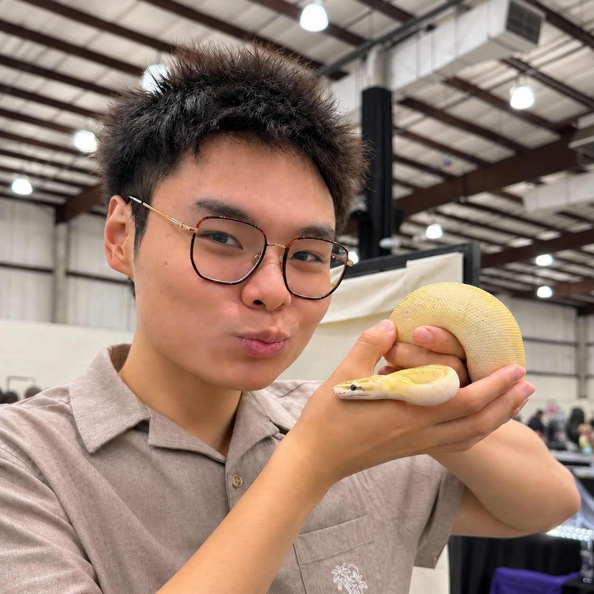
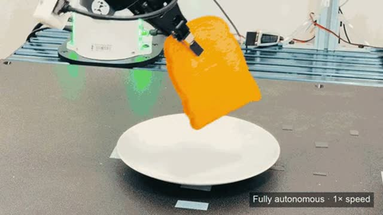
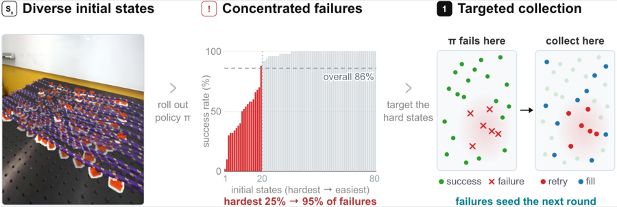
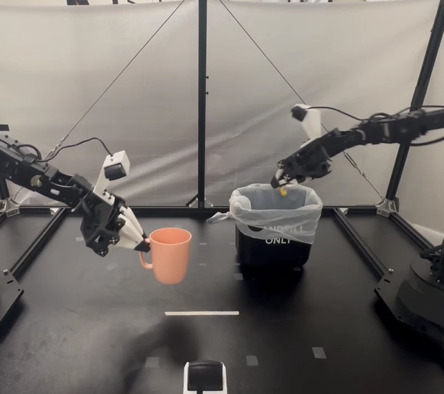
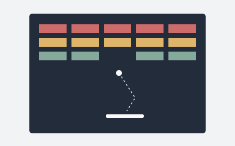

David D. Yuan
I’m a researcher at Stanford University and a cofounder of IntBot.
I work on robot learning, with a focus on humanoids and human–robot interaction. My research spans world–action models, data-efficient learning, and real-world manipulation, with the goal of building robots that learn from people and work alongside them.
Email /
Scholar /
GitHub /
LinkedIn
|

|
Research interests include world–action models and reinforcement learning for humanoid robotics, real-world manipulation, and human–robot interaction.
|

|
Heng Yu*, David D. Yuan*, Juze Zhang*, Changan Chen, Yao Feng, Michelle Baldonado, Steve Cousins, Li Fei-Fei, Jiajun Wu, Ehsan Adeli
In submission
CoRL 2026 Workshop: Do Robots Need World Models?
Best Position Paper
project page / paper / code
A shared video foundation for studying how prediction, action generation, and reusable dynamics models work together.
BibTeX for OpenWAM: An Open Framework for Composable World-Action Models@article{yu2026openwam,
title = {OpenWAM: An Open Framework for Composable World-Action Models},
author = {Heng Yu and David D. Yuan and Juze Zhang and Changan Chen and Yao Feng and Michelle Baldonado and Steve Cousins and Li Fei-Fei and Jiajun Wu and Ehsan Adeli},
journal = {arXiv preprint arXiv:2610.07922},
year = {2026},
url = {https://arxiv.org/abs/2610.07922}
}* Equal contribution
|
|

|
Lars Ankile, Perry Dong, Rohan Bhowmik, Aneesh Muppidi, David D. Yuan, Shuran Song, Chelsea Finn
In submission
CoRL 2026 Workshop: Oops, I Erred
Best Paper
project page / paper / code
Directing human-supervised data collection toward failures and unexplored states to improve real-world manipulation more efficiently.
BibTeX for Mulligan: Performance-Guided Data Collection for Efficient On-Robot Learning@misc{mulligan2026,
title = {Mulligan: Performance-Guided Data Collection for Efficient On-Robot Learning},
author = {Lars Ankile and Perry Dong and Rohan Bhowmik and Aneesh Muppidi and David D. Yuan and Shuran Song and Chelsea Finn},
year = {2026},
eprint = {2610.05882},
archivePrefix = {arXiv},
primaryClass = {cs.RO},
url = {https://arxiv.org/abs/2610.05882}
} |
|

|
David D. Yuan, Tony Z. Zhao, Kaylee Burns, Chelsea Finn
ICRA, 2025
project page / paper / code
Learning when to move quickly and when to slow down, accelerating a learned manipulation policy without collecting new demonstrations.
BibTeX for SpeedTuning: Speeding Up Policy Execution with Lightweight Reinforcement Learning@inproceedings{yuan2025speedtuning,
title = {SpeedTuning: Speeding Up Policy Execution with Lightweight Reinforcement Learning},
author = {David D. Yuan and Tony Z. Zhao and Kaylee Burns and Chelsea Finn},
booktitle = {2025 IEEE International Conference on Robotics and Automation (ICRA)},
pages = {1184--1192},
year = {2025},
doi = {10.1109/ICRA55743.2025.11128753}
} |
|
|
Suvir Mirchandani, David D. Yuan, Kaylee Burns, Md Sazzad Islam, Tony Z. Zhao, Chelsea Finn, Dorsa Sadigh
ICRA, 2025 Best Paper Finalist
project page / paper
Making robot data collection a public, engaging activity through rewards, curiosity, and friendly competition.
BibTeX for RoboCrowd: Scaling Robot Data Collection through Crowdsourcing@inproceedings{mirchandani2025robocrowd,
title = {RoboCrowd: Scaling Robot Data Collection through Crowdsourcing},
author = {Suvir Mirchandani and David D. Yuan and Kaylee Burns and Md Sazzad Islam and Tony Z. Zhao and Chelsea Finn and Dorsa Sadigh},
booktitle = {2025 IEEE International Conference on Robotics and Automation (ICRA)},
pages = {1392--1399},
year = {2025},
url = {https://arxiv.org/abs/2411.01915}
} |
|

|
Evan Zheran Liu, David Yuan, Ahmed Ahmed, Elyse Cornwall, Juliette Woodrow, Kaylee Burns, Allen Nie, Emma Brunskill, Chris Piech, Chelsea Finn
SIGCSE, 2024
project page / paper
A reinforcement learning agent plays student programs and surfaces bugs for instructors, reducing the work of grading interactive assignments.
BibTeX for A Fast and Accurate Machine Learning Autograder for the Breakout Assignment@inproceedings{liu2024breakout,
title = {A Fast and Accurate Machine Learning Autograder for the Breakout Assignment},
author = {Evan Zheran Liu and David Yuan and Ahmed Ahmed and Elyse Cornwall and Juliette Woodrow and Kaylee Burns and Allen Nie and Emma Brunskill and Chris Piech and Chelsea Finn},
booktitle = {Proceedings of the 55th ACM Technical Symposium on Computer Science Education V. 1},
year = {2024},
doi = {10.1145/3626252.3630759}
} |
|